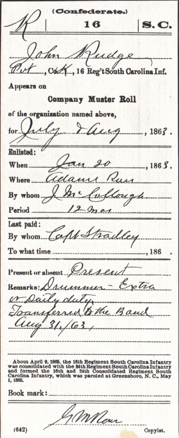
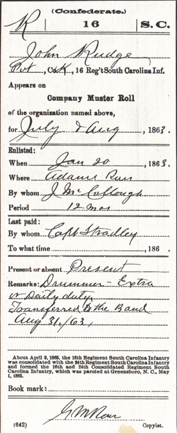

John William Rudge's Muster Roll Cards
This is a collection of muster roll cards detailing John William Rudge's Confederate service as a private in Co. K of the 16th Regiment of the South Carolina Infantry. According to muster rolls he served for about a year as a "musician" and a "drummer."
First 5 cards
His first muster roll card for Jan-Feb 1863 identifies him as being stationed at Adams Run; his muster roll cards for Mar-Apr and May-Jun 1863 identify him as being on detached duty, which suggests but does not imply he saw action with his unit. The unit was ordered to Wilmington in March of 1863 and served in that time before returning to Adams Run; the unit then left by rail on 4 May of 1863 from Charleston, SC to Jackson, MS, near Vicksburg. The unit was transferred to the command of General Statesrights Gist's brigade on 4 Jul 1863 after the fall of Vicksburg and transferred to Rome, GA. His muster roll card for Jul-Aug identifies him as a "Drummer -Extra on Daily duty - Transferred to the Band, Aug 31/63."
 

Next 5 cards
Field and Staff muster roll cards for Sep-Oct and Nov-Dec 1863 identify him as a "musician". His Field and Staff muster roll card for Jan-Feb 1864 refers to him as "Deserted January 1, 1864 and gone to Bermuda."

Last updated on 8 Oct 2009